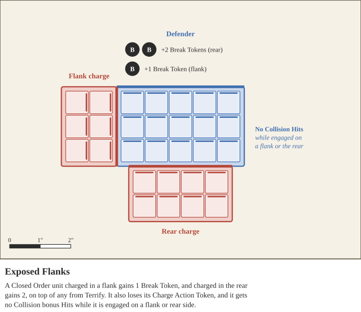

All Closed Order units use trays, and are aligned in ranks. For example, 2 ranks of 5 warriors means a unit of 10 warriors, 5 wide and 2 deep, on a tray.
Closed Order units gain bonus Hits in Melee from their orderly formation and their ability to push. A Closed Order unit gains bonus Hits equal to the number of its full ranks that are not contributing attacks. A rank that is missing any models does not count. For example, a unit with 4 ranks adds 3 bonus Hits. If that unit uses a weapon with Reach (1), which lets its second rank attack, it adds only 2 bonus Hits. Collision Hits are a Strength 5 strike at Length 0: they resolve after every weapon strike, and no weapon has Length 0. They use the unit’s Melee Strength modifiers, such as the Charge Action Token and Momentum, but no weapon’s special rules. They are never reduced by First Blood and do not cause Suppression.
A unit loses its Collision bonus Hits while it is engaged with enemies on its flank or rear sides.
A Closed Order unit is vulnerable from the sides and rear. When it is charged in a flank, it gains 1 Break Token; when charged in the rear, it gains 2 Break Tokens. This is in addition to any Break Tokens from Terrify. It also loses its Charge Action Token, if it has one, and loses its Collision bonus Hits while engaged on a flank or rear side.

Warriors are the default unit type of this game, and other unit types are defined by how they are different from Closed Order rank and file Warrior units.
Cavalry units are closed order units that are mounted on horses or camels. They have a greater Unit Strength per model than Warrior units, but the same Unit Health. They also receive the following special abilities:
While this unit has a Charge Token, it gains an additional +1 Strength.
While this unit has no Action Token, it gains +1 Strength for shooting attacks made with ranged weapons with the Throwing Weapon special rule, as long as it is not locked in combat.
This unit gets +1 Armor
Chariots are closed order units that ride in vehicles pulled by horses or donkeys. They have greater Unit Strength and Unit Health per model than Warrior units, owing to their large construction and oftentimes featuring multiple men fighting from atop the vehicle. They receive the following special abilities:
While this unit has a Charge Token, it gains an additional +1 Strength.
While this unit has no Action Token, it gains +1 Strength for shooting attacks made with ranged weapons with the Throwing Weapon special rule, as long as it is not locked in combat.
This unit gets +1 Armor. Additionally, the armor bonus of the chariot uses the armor bonus shared by all of the crewmen, ignoring the armor of the driver. If the chariot has no crewmen, use the driver's armor instead.
While this unit has a Run or Flee token, it may shoot at a -2 Accuracy penalty, rather than the typical shooting restriction
Chariot units cannot easily turn.
Elephants are powerful beasts controlled by mahouts and frequently crewed by riders with ranged weapons. They have great Unit Strength and Unit Health per model. They receive the following special abilities:
An Elephant unit’s Armor Value is always 3. It ignores the armor of its mahout and crewmen, and no other armor or Armor modifier changes it. Effects that modify Armor Saves, such as Sunder (X), still apply.
While this unit has a Run or Flee token, it may shoot at a -2 Accuracy penalty, rather than the typical shooting restriction
Elephant units suffer double the Army Morale lost via Suppression, and Elephant units can only be rallied by other Elephant units.
When this unit reaches Half Strength on the Unit Health Table, it gains Run them Down and Suicidal.
Open Order units do not use trays, and instead move with Cohesion. At the end of any movement, all models in an Open Order unit must be within 1” of another model, in such a way that all models form either a chain or a sort of cluster. The unit may not be divided into separate groups - cohesion must continuously connect all of the models in the unit.
At the beginning of the Morale Phase, any Open Order units not in Cohesion gain Flee tokens.
While a unit with Evasion is in Open Order and has a Run Action Token, Shooting attacks against it suffer a -1 Accuracy penalty. All Skirmishing Warriors, Light Warriors, Skirmishing Cavalry, and Light Cavalry have Evasion.
Skirmishing Warriors are simply Warriors that are Open Order.
Light Warriors are Warrior units that may be Closed or Open Order. When deploying a Light Warrior unit, the controlling player decides whether to deploy them in a tray as Closed Order or in Cohesion as an Open Order unit.
Additionally, during a game the controlling player may choose to convert a Closed Order unit of Light Warriors into Open Order. During the unit’s activation, the unit may spend half of its Move Allowance to move off of its tray and begin operating as an Open Order unit. Remove the tray once it is convenient.
Skirmishing Warriors and Light Warriors have the Evasion special rule.
Skirmishing and Light Cavalry operate as expected - Skirmishing Cavalry are Open Order Cavalry units that use Cohesion, and Light Cavalry units are able to be used as either Open or Closed order, as per the rules for Light Warriors above.
Skirmishing Cavalry and Light Cavalry have the Evasion special rule.
There are no Skirmishing or Light Chariots or Elephants available in army profiles, however these units can possibly become Open Order with the use of Special Abilities. While Open Order, Chariot and Elephant units split up and each model is treated as its own Open Order unit.
When a unit splits into one-model units, for this or any other rule, divide its remaining Health as evenly as possible among the new units; the controlling player assigns any remainder. Each new unit stays in the parent unit’s Penalty Category and keeps its Accuracy and Strength Penalty tokens; the split itself causes no Break tokens and no models are removed. Each new unit gets a copy of the parent unit’s Break tokens, and contributes its own model’s share of Army Morale. From the next Orders Phase, each new unit takes its own Order Token. For example, 3 chariots with 12 Health that have taken 5 Damage split into units with 3, 2 and 2 Health.
Warmachine units are war engines, such as bolt throwers and stone throwers, crewed by Engineers. Engineers are Open Order models and must stay within 1” Cohesion of their war engine. Every Warmachine unit is a Light, Heavy, or Massive Warmachine, which decides how its war engine moves. All Warmachine units follow these rules:
A war engine can only move or shoot while at least 2 of its Engineers are within 1” of it.
A war engine cannot be targeted by Shooting attacks or attacked in Melee. Attacks against a Warmachine unit are made against its Engineers. The war engine cannot be Bumped, Pushed, or moved through, but its Engineers can be Bumped as normal.
A Light Warmachine may move and shoot in the same activation, but cannot Run or Charge.
A Heavy Warmachine may either move or shoot in an activation, not both, and cannot Run or Charge.
A Massive Warmachine cannot move once it has been deployed.
If all of a war engine’s Engineers are destroyed or have a Flee Action Token, the war engine is abandoned. An abandoned war engine stays where it is and cannot move or shoot, but still blocks movement as a battlefield object and gives Light Cover (see Cover). An abandoned war engine counts as a Flammable Obstacle, and it can only be destroyed by fire, such as from Fire Brands. Moving into base contact with it does not destroy it. Abandoned war engines count as destroyed at the end of the game.
Engineers can recover an abandoned war engine, including one from an enemy army. If at least 2 Engineer models from a unit without a war engine of its own end their movement in base contact with an abandoned war engine, the war engine joins their unit and is no longer abandoned. Only Engineer models can recover a war engine.
The raw mass of a unit is important for a few different situations, such as Psychology and bumping effects. To calculate the Unit Strength of a unit, consult the table below:
| Unit Type | Unit Strength |
|---|---|
| Warriors | 1 Per Model |
| Cavalry | 3 Per Model |
| Chariots | 1 Per Driver, 1 Per Crewman, and 2 Per Horse |
| Elephants | 1 Per Mahout, 1 Per Crewman, and 12 Per Elephant |
| Warmachines | 1 Per Engineer, plus 3 for a Light, 5 for a Heavy, or 7 for a Massive Warmachine |